Sustainable Product Design · 2025
LoopSpring
面向高氟地区的模块化漂浮净水装置，把废弃铝泥转化为除氟吸附材料，并借助水流自主移动，降低净水成本与维护门槛。
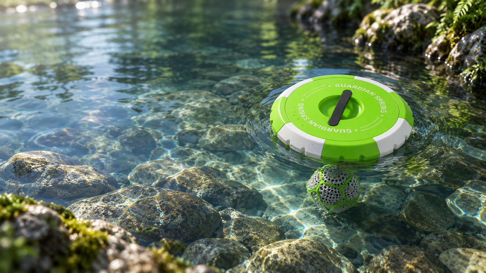
可持续产品设计
模块化净水装置
完整方案 · 11 页
Product in motion
产品演示
查看装置在真实使用场景中的结构、漂浮方式与净水过程。
Full case study
项目全案
从问题研究到产品验证
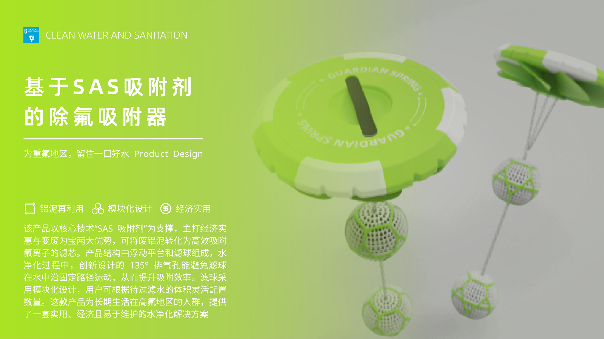
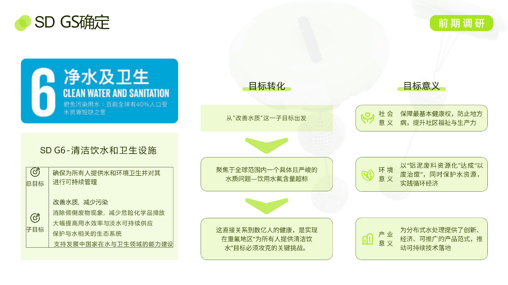
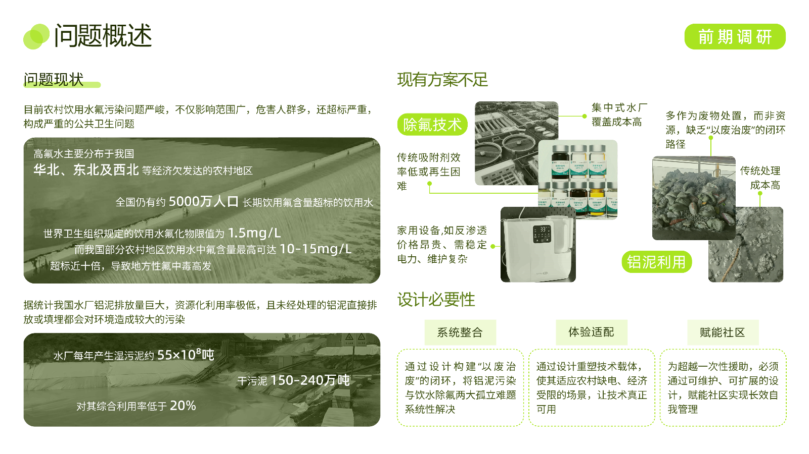
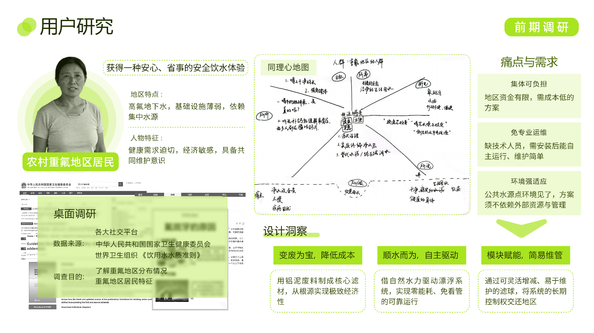
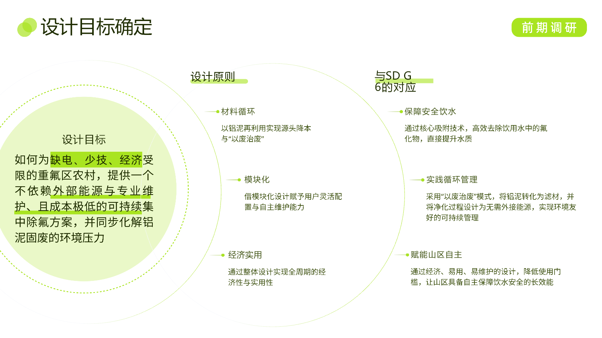
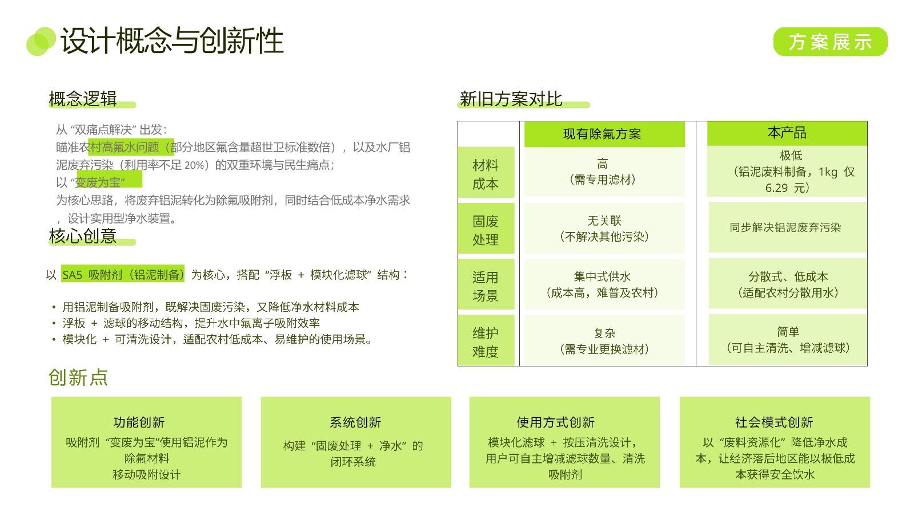
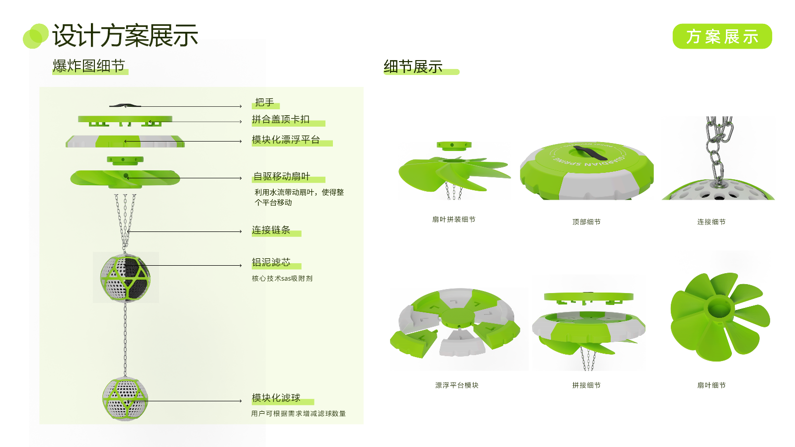
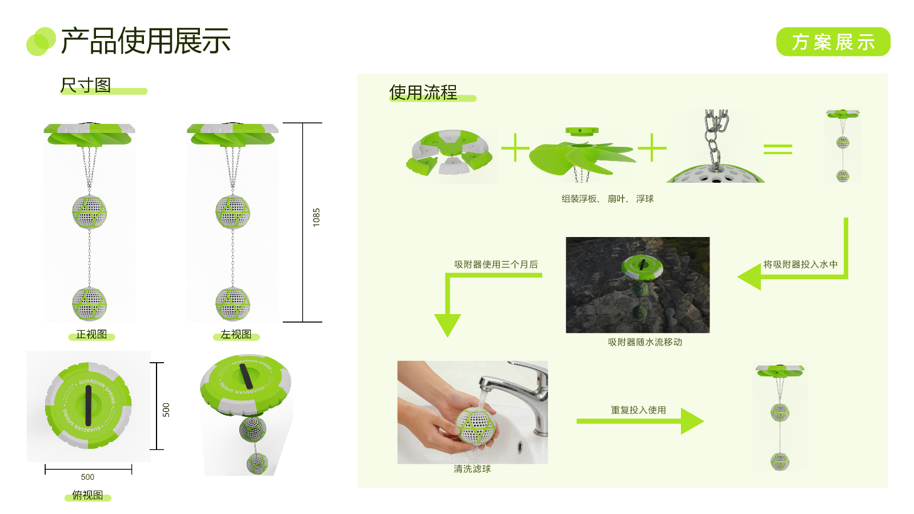
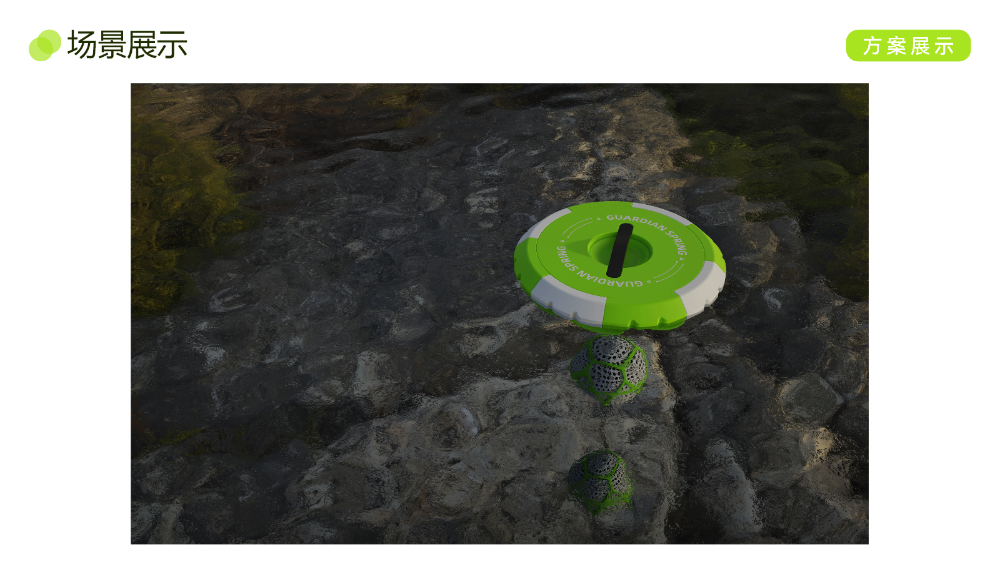
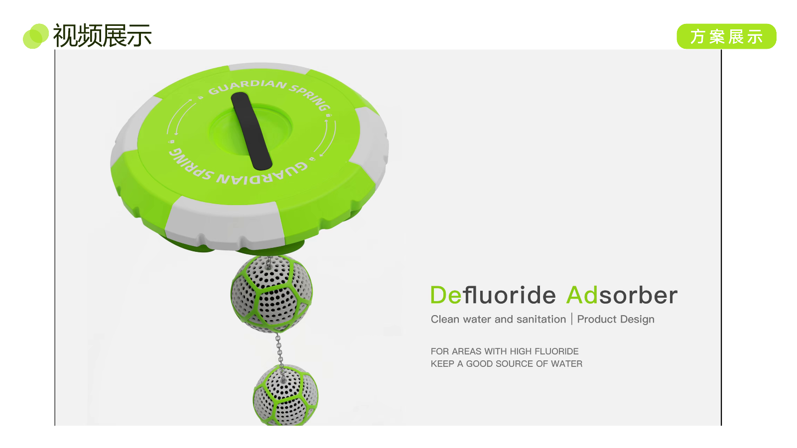
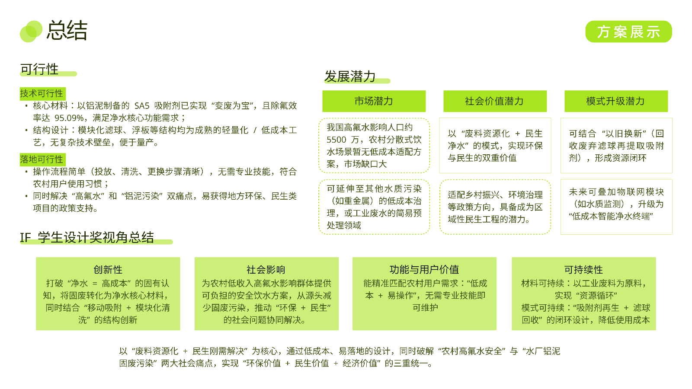